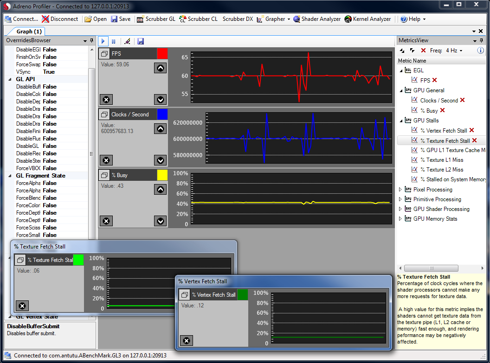
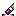

A Grapher interface plots real-time performance metrics streaming from the mobile application(if app grapher is selected) or the device(if global grapher is used).
To open a new Grapher, click on the Grapher drop down menu within the main toolstrip and click on the desired grapher button to open it.

Basic usage:
• To add a metric to a Grapher, use the left mouse button to drag a metric from the Grapher Metrics tab of the Metrics Browser and drop it on a Grapher.
- If the metric does not begin plotting immediately, make sure an application is currently connected if using App Grapher, and that the Grapher has not been paused. If using Global Grapher then your device might not support global metrics.
• To remove a metric from a Grapher, either:
- click on the close button within the metric line.
- click on the close button next to the metric name within the Metrics View.
• To change a real-time metric's line color, click the color button [] beside the metric in the metric line, then select a new color from the palette that appears.
Toolbar options:
[] Starts/resumes plotting metrics
[] Pauses plotting metrics
[] Erases any existing data
[] Exports captured data to a CSV file